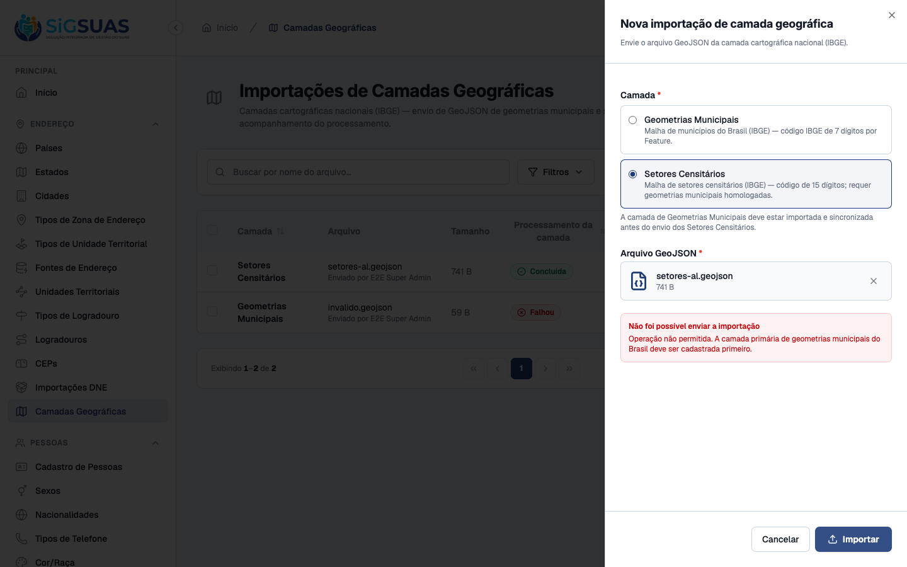
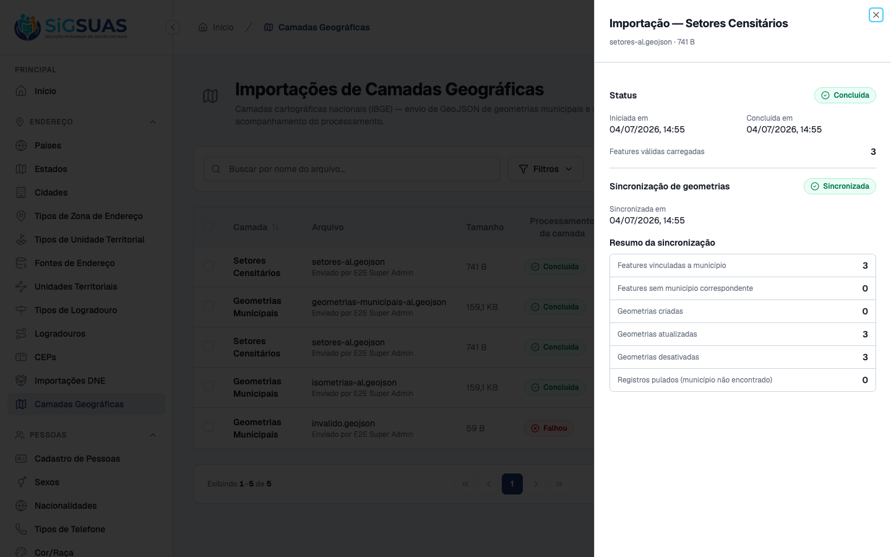
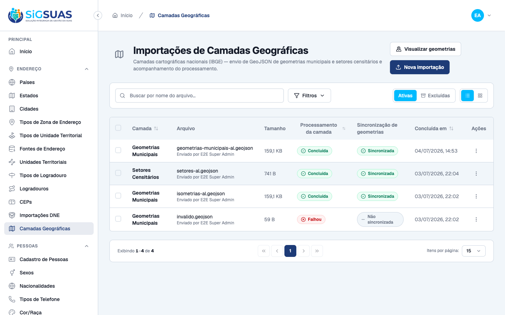
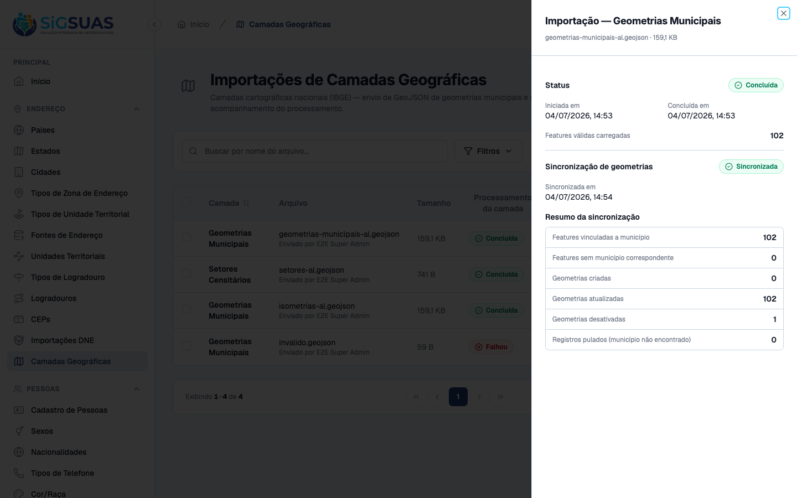
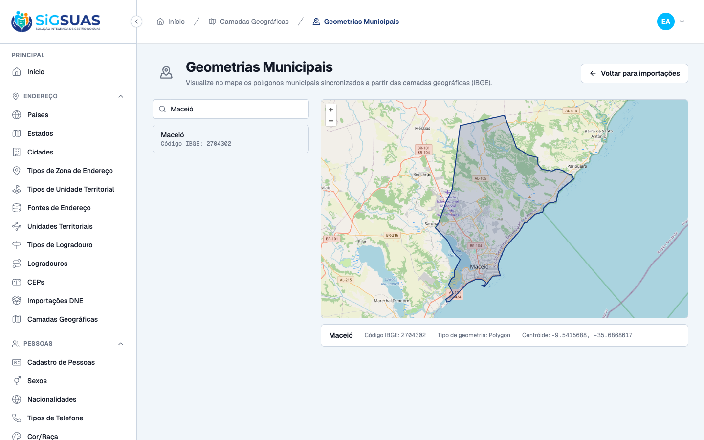
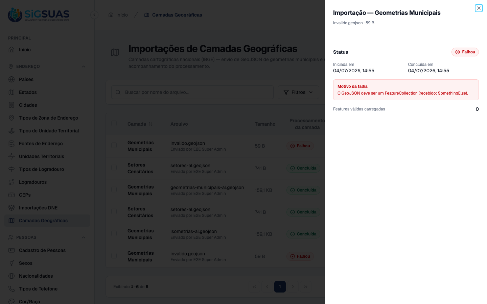

5 critérios de aceite da Revisão 3 (CA11, CA12, CA14, CA15, CA16 — não existe CA13 na numeração do PO), todos evidenciados por navegador dirigindo o Painel Global real, com estados confirmados no banco PostGIS e cobertura automatizada de 108 testes (407 asserções) nas suítes Geo/CityGeometry. A Revisão 3 renomeia a terminologia para 'geometria municipal' (antes 'isometria'), atualiza a mensagem de bloqueio do CA11 e introduz a tela de visualização da geometria municipal em mapa (CA15, OpenLayers + OSM). Resultado geral: todos os critérios atendidos.
| CA | Critério | Status |
|---|---|---|
| CA11 | Bloqueio da malha de setores censitários sem geometria municipal homologada | ATENDIDO · navegador |
| CA12 | Carga da malha de setores censitários com vínculo aos municípios | ATENDIDO · navegador |
| CA14 | Importação da geometria municipal a partir do GeoJSON (vínculo por código IBGE) | ATENDIDO · navegador |
| CA15 | Visualização da geometria municipal em tela simples com mapa | ATENDIDO · navegador |
| CA16 | Rejeição de GeoJSON inválido sem registrar geometrias | ATENDIDO · navegador |
Critério (Gherkin): Dado que sou um Administrador logado no Painel Global E que a base nacional de geometrias municipais NÃO foi cadastrada e homologada Quando tento processar o arquivo de malha de setores censitários Então o sistema me impede de continuar (bloqueia o envio) E apresenta a mensagem: "Operação não permitida. A camada primária de geometrias municipais do Brasil deve ser cadastrada primeiro."
Como foi testado: A importação de geometrias municipais homologada foi temporariamente removida (soft delete via tinker) para reproduzir o estado inicial da plataforma. Em Camadas Geográficas → Nova importação, selecionada a camada Setores Censitários com o arquivo setores-al.geojson e acionado Importar. Após a captura, o estado original do banco foi restaurado (restore).

Critério (Gherkin): Dado que a base nacional de geometrias municipais está homologada (importada e sincronizada) E que realizo a carga do arquivo de malha de setores censitários do IBGE em GeoJSON Quando o processamento global é concluído com sucesso Então o sistema vincula essas divisões geográficas aos respectivos municípios da plataforma E disponibiliza as camadas para consumo na Área do Cliente
Como foi testado: Com a base municipal homologada, upload de setores-al.geojson (camada Setores Censitários, formato GeoJSON), processamento pelo worker da fila geo e sincronização pela ação Sincronizar da listagem.

Critério (Gherkin): Dado que sou um Administrador logado no Painel Global E que envio um arquivo GeoJSON (formato padrão de importação da geometria municipal) contendo as informações dos municípios, com a chave IBGE em properties.id Quando o processamento é concluído com sucesso Então as geometrias municipais válidas são registradas em city_geometries E vinculadas aos respectivos municípios por meio do código IBGE (sem chave estrangeira)
Como foi testado: Upload de geometrias-municipais-al.geojson (malha IBGE de Alagoas, 102 municípios, chave properties.id) na camada Geometrias Municipais; processamento na fila geo (staging) e sincronização (negócio).


Critério (Gherkin): Dado que sou um usuário do Painel Global com acesso às importações de camadas E que existe uma geometria municipal importada Quando consulto a geometria de um município em uma tela simples com mapa Então visualizo a representação geográfica do município importado E consigo validar visualmente, de forma rápida, se a geometria foi carregada corretamente e se corresponde ao município esperado
Como foi testado: Na listagem de Camadas Geográficas, acionado o botão Visualizar geometrias (rota /app/geo-layer-imports/city-geometries, novo endpoint GET /api/manager/city-geometries). Busca por "Maceió" no seletor e seleção do município (código IBGE 2704302).

Critério (Gherkin): Dado que carreguei um arquivo GeoJSON inválido ou sem as informações necessárias para o processamento (não é FeatureCollection, Feature sem properties.id, ou geometry de tipo não suportado) Quando o job de processamento executa a validação estrutural Então a importação é rejeitada com status indicando falha E uma mensagem explicativa é apresentada E nenhuma geometria inválida é registrada na tabela de negócio
Como foi testado: Upload de invalido.geojson (documento com type: SomethingElse) na camada Geometrias Municipais; processamento pelo worker da fila geo.

PASS Tests\Feature\Api\CityGeometryControllerTest ✓ it lists city geometries with a light payload without the geometry… 0.78s ✓ it paginates city geometries 0.02s ✓ it lists only active city geometries 0.02s ✓ it searches city geometries by name 0.02s ✓ it searches city geometries by ibge code 0.02s ✓ it shows a city geometry with the polygon as GeoJSON 0.02s ✓ it returns 404 when the city geometry uuid does not exist 0.01s ✓ it denies listing without the index permission 0.01s ✓ it denies showing without the show permission 0.01s ✓ it requires authentication 0.01s PASS Tests\Feature\Api\GeoLayerImportControllerTest ✓ it lists geo layer imports 0.02s ✓ it filters geo layer imports by layer_type 0.02s ✓ it filters geo layer imports by status 0.02s ✓ it shows a geo layer import with creator 0.02s ✓ it stores a municipal geometry import and dispatches the job on the… 0.04s ✓ it validates required fields on store 0.02s ✓ it rejects an invalid layer_type 0.02s ✓ it rejects a non-geojson file 0.02s ✓ it rejects a new import while another is pending or processing 0.04s ✓ it blocks storing a census sector layer while the municipal geometr… 0.04s ✓ it blocks the census sector layer when the municipal geometry is co… 0.03s ✓ it accepts a census sector layer once the municipal geometry is hom… 0.02s ✓ it soft deletes a geo layer import while preserving its stored file 0.03s ✓ it blocks deleting a processing import 0.02s ✓ it requires authentication 0.01s ✓ it forbids access without permissions 0.02s ✓ it forbids destroy without the destroy permission 0.02s ✓ it lists only trashed imports with filter[trashed]=only 0.02s ✓ it bulk destroys imports in a single soft-delete call 0.02s ✓ it rejects the whole batch when an id is processing 0.02s ✓ it validates ids on bulk destroy 0.01s ✓ it restores a soft-deleted import resolving the trashed binding 0.02s ✓ it returns 422 when restoring an import that is not trashed 0.02s ✓ it force deletes a trashed import removing the record and its store… 0.02s ✓ it logs a single force_destroyed activity without a duplicate delet… 0.02s ✓ it retries a failed import requeueing the job with the stored geojs… 0.02s ✓ it returns 422 when retrying an import that is not failed 0.02s ✓ it returns 422 when retrying an import whose geojson is missing fro… 0.02s ✓ it queues the layer sync for a completed import on the geo queue 0.02s ✓ it returns 422 when syncing an import that is not completed 0.01s ✓ it returns 422 when the import is already queued or syncing with da… 0.01s ✓ it returns 422 when the import is already queued or syncing with da… 0.02s ✓ it returns 422 when another import is already queued or syncing wit… 0.02s ✓ it returns 422 when another import is already queued or syncing wit… 0.01s ✓ it forbids sync without the sync permission 0.01s ✓ it exposes the sync state in the resource 0.01s PASS Tests\Feature\Jobs\ProcessGeoLayerImportJobTest ✓ it processes a valid municipal geojson into staging features 0.02s ✓ it logs a processed activity with layer_type and feature_count 0.01s ✓ it replaces the staging on reprocess without duplicating features 0.01s ✓ it processes a census sector geojson with 15-digit codes into stagi… 0.01s ✓ it fails the import for structurally invalid geojson with dataset "… 0.01s ✓ it fails the import for structurally invalid geojson with dataset "… 0.01s ✓ it fails the import for structurally invalid geojson with dataset "… 0.01s ✓ it fails the import for structurally invalid geojson with dataset "… 0.01s ✓ it fails the import for structurally invalid geojson with dataset "… 0.01s ✓ it fails the import for structurally invalid geojson with dataset "… 0.01s ✓ it fails the import for structurally invalid geojson with dataset "… 0.01s ✓ it fails the import when the geojson file is missing from storage 0.01s PASS Tests\Feature\Jobs\SyncGeoLayerJobTest ✓ it syncs a municipal geometry import into city_geometries resolving… 0.02s ✓ it marks syncing at the start of the handle before running the pipe… 0.01s ✓ it logs a synced activity with the summary 0.01s ✓ it resyncs idempotently updating existing geometries and deactivati… 0.02s ✓ it syncs a census sector import distributing sectors to cities by t… 0.01s ✓ it resyncs census sectors idempotently without duplicating sectors… 0.01s ✓ it deactivates the paired census_sector_geometries row when its sec… 0.01s ✓ it marks the sync as failed recording the error message with datase… 0.01s ✓ it marks the sync as failed recording the error message with datase… 0.01s PASS Tests\Unit\Services\Geo\GeoJsonValidationServiceTest ✓ it returns normalized features for a valid municipal feature collec… 0.01s ✓ it accepts a 15-digit code and MultiPolygon for the census sector l… 0.01s ✓ it accepts a numeric properties.id normalizing it to string 0.01s ✓ it processes a large feature collection without loading the whole d… 0.01s ✓ it rejects content that is not valid json 0.01s ✓ it rejects a document whose type is not FeatureCollection 0.01s ✓ it rejects a feature collection without features with dataset "empt… 0.01s ✓ it rejects a feature collection without features with dataset "miss… 0.01s ✓ it rejects a feature collection without features with dataset "wron… 0.01s ✓ it rejects a feature without properties.id 0.01s ✓ it rejects an ibge code outside the digit pattern of the layer with… 0.01s ✓ it rejects an ibge code outside the digit pattern of the layer with… 0.01s ✓ it rejects an ibge code outside the digit pattern of the layer with… 0.01s ✓ it rejects an ibge code outside the digit pattern of the layer with… 0.01s ✓ it rejects a missing or unsupported geometry with dataset "missing… 0.01s ✓ it rejects a missing or unsupported geometry with dataset "null geo… 0.02s ✓ it rejects a missing or unsupported geometry with dataset "point ge… 0.02s ✓ it rejects a missing or unsupported geometry with dataset "linestri… 0.01s ✓ it rejects a missing or unsupported geometry with dataset "empty co… 0.01s PASS Tests\Unit\Services\Geo\GeoLayerSyncServiceTest ✓ it resolves city_id by cities.ibge_code without any foreign key 0.02s ✓ it counts city_not_found as skipped without writing business rows 0.02s ✓ it computes the bounding box centroid of the loaded polygon 0.02s ✓ it assigns the IBGE address source to the synced rows 0.02s ✓ it resolves the census sector city by the 7-digit prefix of the sec… 0.01s ✓ it deactivates active rows that are absent from the current load 0.02s ✓ it deactivates the paired geometry when a census sector becomes abs… 0.03s ✓ it deduplicates repeated ibge codes within the same load keeping th… 0.02s PASS Tests\Unit\Services\Geo\GeoPanelQueryServiceTest ✓ it filters extreme_poverty by per_capita_income against the configu… 0.04s ✓ it filters single_person as exactly one ACTIVE member 0.07s ✓ it filters receives_pbf on the family flag 0.02s ✓ it filters member flags (child_labor, homeless_situation, has_disab… 0.05s ✓ it filters indigenous_quilombola as an OR between the two family fl… 0.02s ✓ it filters gpte by any traditional group, refinable by traditional_… 0.02s ✓ it intersects multiple criteria with AND (RN06) 0.03s ✓ it classifies expired as more than 24 months since source_updated_a… 0.02s ✓ it classifies expiring as between 19 and 24 months since source_upd… 0.02s ✓ it restricts by sector_uuid (SQLite fallback: sector city = family… 0.02s ✓ it aggregates by sector, groups anonymous points and computes the b… 0.02s ✓ it ignores families without an active locatable address point 0.02s ✓ it scopes every aggregate to the given tenant (RN01) 0.02s ✓ it validates that a sector belongs to the tenant municipality (RN08… 0.01s Tests: 108 passed (407 assertions) Duration: 2.78s